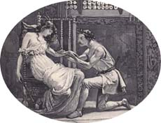

|
|
||||
|
|
Home | Corson Collection | Biography | Works | Image Collection | Recent Publications | Portraits | Correspondence | Forthcoming Events | Links | E-Texts | Contact The Bridal of TriermainFirst Edition, First Impression: The Bridal of Triermain, or The Vale of St. John: In Three Cantos. Edinburgh: Printed by James Ballantyne and Co. for John Ballantyne and Co.; and for Longman, Hurst, Rees, Orme, and Brown; and Gale, Curtis, and Fenner; London. 1813. Composition | Synopsis | Reception | Links CompositionScott began writing the Bridal of Triermain in 1812 while still hard at work on Rokeby. It was a continuation of one of three anonymous fragments that he had printed in the Edinburgh Annual Register for 1809. Scott had been amused by the conjectures surrounding their authorship and thought it would be diverting to play a further hoax on the reviewers by publishing a lengthier anonymous composition. He particularly relished bamboozling the influential William Jeffrey, whom he thought lacking in true poetic sensibility. Many critics had believed Scott's friend William Erskine to be the author of the lines in the Register, and now Erskine agreed to play along with Scott's scheme, submitting a learned preface. Scott himself inserted allusions in the text of the poem designed to remind the reader of Erskine. He had hoped to mystify the critics further by publishing The Bridal of Triermain simultaneously with Rokeby. In the event, though, it did not appear until almost two months later on March 9, 1813. SynopsisThe Bridal of Triermain interweaves three stories, all with a Lake District setting: the eighteenth-century courtship of Arthur and Lucy, the Arthurian Legend of 'Lyulph's Tale', and the twelfth-century romance of Sir Roland de Vaux. In order to warn his aristocratic lover Lucy against excessive maidenly pride, the low-born poet Arthur recites 'Lyulph's Tale' in cantos I-II. He tells how how King Arthur is seduced by the enchantress Guendolen. When he abandons the pregnant Guendolen to resume his kingly duties, she swears revenge. Sixteen years later, the fruit of their union, Gyneth appears at Camelot to remind Arthur of his promise that should he and Guendolen produce a daughter, she would wed the bravest of the Knights of the Round Table. Arthur declares a tournament with Gyneth's hand as the prize but instructs her to halt the combat before lives are lost. As the instrument of her mother's wrath, however, she does nothing to end the ferocious fighting, until Merlin arises from a chasm in the ground to punish her. She is sentenced to slumber in Guendolen's enchanted castle until awakened by a knight as brave as any of the Round Table. The poet Arthur's courtship of Lucy proves successful and, following their marriage, Lucy begs him to tell of Gyneth's fate. In the third and final canto, then, he recounts the quest of the twelfth-century knight Sir Roland de Vaux of Triermain. He has heard Gyneth's legend and sets out to find the enchanted castle. Having located it in the Valley of Saint John, he successfully passes through a series of allegorical dangers and temptations (Fear, Avarice, Sensuality, Ambition) to awaken Gyneth from her five hundred-year sleep and win her hand. Reception
The Bridal sold well, but neither it nor Rokeby were the commercial triumph that Scott required to cover his mounting expenses at Abbotsford and to mend the increasingly perilous affairs of John Ballantyne and Co. (see Financial Hardship). LinksLast updated: 19-Dec-2011
|
|||